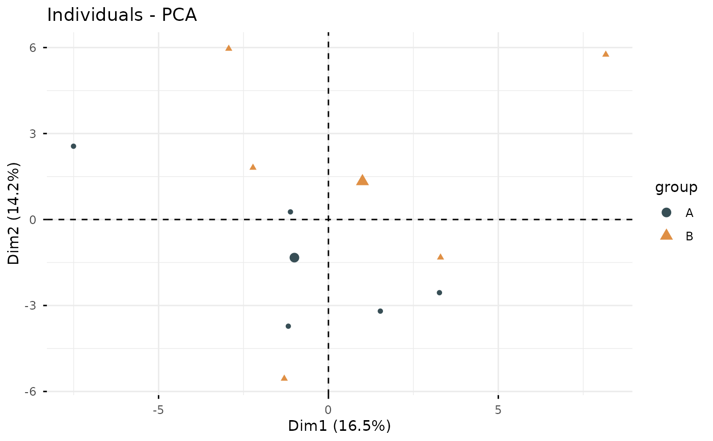

This function performs Principal Component Analysis (PCA) on gene expression data, reduces dimensionality while preserving variance, and generates a scatter plot visualization.
Usage
iobr_pca(
data,
is.matrix = TRUE,
scale = TRUE,
is.log = FALSE,
pdata,
id_pdata = "ID",
group = NULL,
geom.ind = "point",
cols = "normal",
palette = "jama",
repel = FALSE,
ncp = 5,
axes = c(1, 2),
addEllipses = TRUE
)Arguments
- data
Input data for PCA: matrix or data frame.
- is.matrix
Logical indicating if input is a matrix. Default is TRUE.
- scale
Logical indicating whether to scale the data. Default is TRUE.
- is.log
Logical indicating whether to log-transform the data. Default is FALSE.
- pdata
Data frame with sample IDs and grouping information.
- id_pdata
Column name in `pdata` for sample IDs. Default is "ID".
- group
Column name in `pdata` for grouping variable. Default is NULL.
- geom.ind
Type of geometric representation for points. Default is "point".
- cols
Color scheme for groups. Default is "normal".
- palette
Color palette for groups. Default is "jama".
- repel
Logical indicating whether to repel overlapping points. Default is FALSE.
- ncp
Number of principal components to retain. Default is 5.
- axes
Principal components to plot (e.g., c(1, 2)). Default is c(1, 2).
- addEllipses
Logical indicating whether to add concentration ellipses. Default is TRUE.
Examples
if (requireNamespace("FactoMineR", quietly = TRUE) &&
requireNamespace("factoextra", quietly = TRUE)) {
set.seed(123)
eset <- matrix(rnorm(1000), nrow = 100, ncol = 10)
rownames(eset) <- paste0("Gene", 1:100)
colnames(eset) <- paste0("Sample", 1:10)
pdata <- data.frame(
ID = colnames(eset),
group = rep(c("A", "B"), each = 5)
)
iobr_pca(eset, pdata = pdata, id_pdata = "ID", group = "group", addEllipses = FALSE)
}
#>
#> A B
#> 5 5
#> >>== colors for group:
#> >>== #374E55FF>>== #DF8F44FF
#> Ignoring unknown labels:
#> • fill : "group"
#> • linetype : "group"
